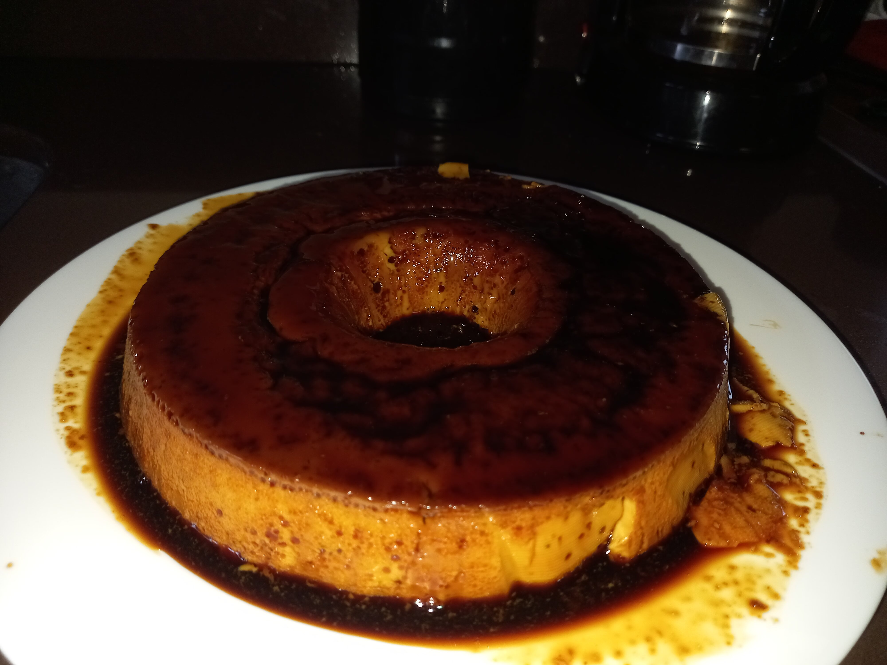

Pudding

Description
Sweet pie made of condensed milk and eggs.
Ingredients
Pastry
- 1 condensed milk;
- 250ml of milk;
- 3 eggs.
Syrup
Steps
Syrup
- In a pan cook enough sugar until it starts to melt;
- As the sugar melts add a little bit of water to form a liquid;
- Grease the pudding mold with the syrup and reserve it.
Pastry
- Mix all the ingredients in a blender for 2min and dump it on the mold;
- Cook it on bain marie in the oven at 250ºC for 1hr.